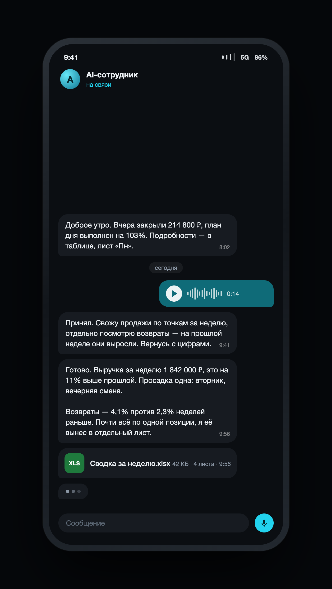

ALETHEIA
AI, безопасность и учёт для бизнеса
Собираем AI-сотрудников под задачи и процессы компании, проверяем защищённость цифрового контура и ставим управленческий учёт. Четыре направления ниже — начните с того, что болит сейчас.
Разберём задачу и скажем, какое направление её закрывает и сколько это стоит.
Все направленияТак это выглядит у владельца: голосовое утром — готовые цифры и файл к завтраку.
Чем мы занимаемся
Четыре самостоятельных направления. Их берут по отдельности — и вместе, когда задача этого требует.
AI-сотрудники флагман
Цифровой сотрудник под ваш процесс: работает с данными компании, выполняет согласованные действия и отдаёт результат в Telegram. От 100 000 ₽ + техническое сопровождение от 20 000 ₽/мес.
Подробнее о внедрении →ALETHEIA Security
Пентест: приходим ломать с вашего письменного разрешения, находим дыры и закрываем их — сами или передав всё вашему админу. Предварительная оценка периметра бесплатна.
Проверить защищённость →РЕЗИДЕНТ
Локальная AI-среда для документов компании: обработка проходит в вашем контуре, данные не уезжают наружу. Для тех, у кого облако невозможно.
Посмотреть РЕЗИДЕНТ →Учти.Бизнес
Управленческий учёт в Telegram: деньги, обязательства и прибыль по направлениям — без таблиц, которые никто не ведёт.
Как устроен учёт →AI-сотрудники
Это не чат-бот с кнопками и не коробочный продукт. Сотрудника собираем под вашу задачу: подключаем данные, задаём правила и границы, запускаем и сопровождаем. Действия с деньгами и обязательствами остаются за человеком.
- Что он делает
- Сводит продажи и кассу в регулярную сводку, разбирает договоры и готовит черновики документов, ищет товар и считает ввоз, ведёт таблицы и напоминания, пишет тексты и следит за конкурентами. Список открытый: вашей задачи может в нём не быть.
- Как проходит запуск
- Сначала разбираем задачу и пишем техническое задание, затем собираем сотрудника — ориентир 2–3 дня после получения материалов — и три дня вы работаете с ним на своих данных.
- Разбор задачи — 29 000 ₽ за одного сотрудника Собираем информацию, разбираем процесс и пишем техническое задание, чтобы не собирать вслепую. Сумма идёт в зачёт внедрения.
- Сборка сотрудника под вашу задачу Подключаем данные, задаём правила и границы полномочий, запускаем.
- Три дня работы с ним На ваших реальных данных. Собираем обратную связь и правим.
- Устроило — доплата 71 000 ₽ Внедрение от 100 000 ₽, из них 29 000 ₽ уже оплачены разбором. Если сотрудник дороже, доплата считается от его цены.
Нужен второй сотрудник — он считается своей ценой, а не довеском к первому: свой разбор задачи, своё внедрение, своё сопровождение.
- Сотрудник
- от 100 000 ₽ + техническое сопровождение от 20 000 ₽/мес
- Один сотрудник под согласованный перечень процессов и подключений. Для старта и для участка, который болит сильнее всего.
- Команда
- от 350 000 ₽ + техническое сопровождение от 60 000 ₽/мес
- Несколько сотрудников на отдельном контуре: закрывают целое направление, у каждого свои доступы.
- Предприятие
- от 600 000 ₽ + техническое сопровождение от 100 000 ₽/мес
- Несколько направлений сразу: свои сотрудники, свои подключения и постоянное сопровождение.
Стоимость внедрения зависит от объёма и сложности работ, стоимость сопровождения — от нагрузки и развития сотрудника; состав и цену согласуем до запуска. Состав работ, контроль действий и подключения →
ALETHEIA Security
Компания заказывает проверку самой себя. Мы делаем то же, что сделал бы человек, который хочет вас ограбить: ищем, где не докрутили гайку, пробуем войти и поднять права — только по договору, в границах, которые вы очертили. Нагрузочные атаки в работу не входят: ваши клиенты не должны заметить, что вас проверяли.
Найденное закрываем сами или отдаём вашему админу в готовом виде; повторная проверка входит в работу. Предварительная оценка периметра — бесплатно, до договора и доступов. Как проходит пентест →
РЕЗИДЕНТ
Локальная AI-среда на вашем железе: документы, договоры и база знаний обрабатываются внутри контура и не уходят во внешние сервисы. Для юристов, клиник и всех, у кого облако невозможно по требованиям к данным.
Три тарифа — от отдельного рабочего места до полностью изолированного контура. Что входит и сколько стоит →
Учти.Бизнес
Управленческий учёт компании в Telegram: сколько денег на счетах, кому и сколько должны, какая прибыль по направлениям и точкам. Данные вносятся в переписке, отчёт собирается сам.
От 49 000 ₽. Посмотреть, как это работает →
Чего мы не обещаем
AI-сотрудник не работает без ошибок и не заменяет человека целиком. Он не покупает, не платит и не подписывает документы. Он не подходит процессу без пригодных данных и не снимает с вас ответственность перед вашими клиентами. Команда на связи в будни, 10:00–19:00 по Москве, мониторинг работает круглосуточно. Но формального SLA с гарантированным временем первого ответа у нас пока нет, и мы его не заявляем. Всё, что мы обещаем, записано в составе работ и в договоре.
Мы используем AI-сотрудников в собственных процессах
Кто за этим стоит
Меня зовут Сергей Ковалев. Я не консультант по AI со стороны: я собрал команду цифровых сотрудников сначала для собственного бизнеса, а потом стал ставить такие же другим.
Поэтому мы говорим не обещаниями, а тем, что уже работает каждый день: в рознице, в бухгалтерии, в юридической фирме, на выходе бренда на международный рынок.
Основатель ALETHEIA
Начнём с разбора задачи
Расскажите, какой участок сегодня съедает время людей. Разберём задачу и напишем техническое задание — 29 000 ₽ за одного сотрудника, и эта сумма идёт в зачёт. Дальше сборка, три дня работы на ваших данных и доплата, если результат устроил.
Без автосписания и обязательной покупки: не подошло — просто расходимся. Не знаете, с какого процесса начать — это и есть работа разбора: покажем, что автоматизировать первым.
Не пользуетесь Telegram? Оставьте контакты
Заявка отправлена. Свяжемся с вами в течение рабочего дня.
Не удалось отправить — текст остался в полях. Попробуйте ещё раз или напишите на hello@aletheia-ai.ru либо в Telegram: ответим в течение рабочего дня.